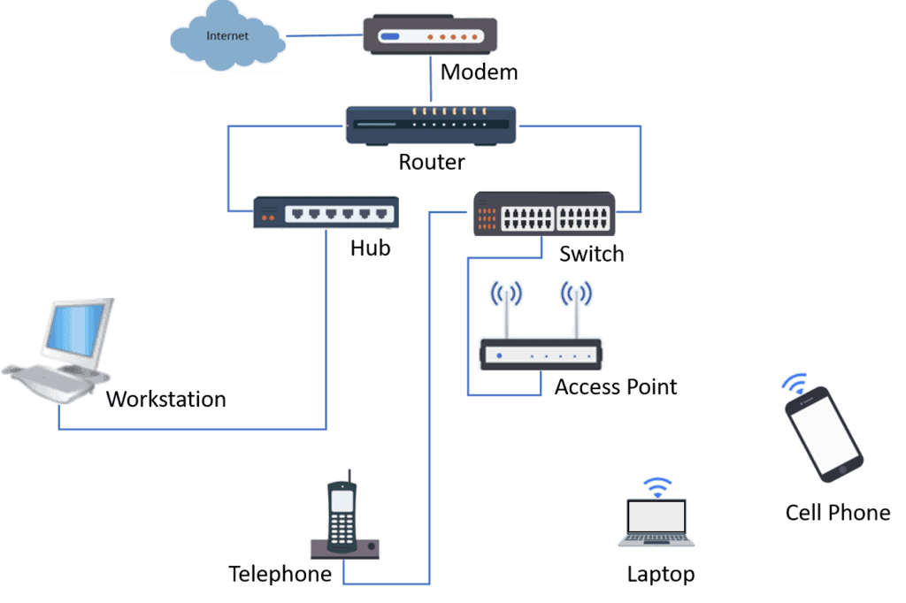

I'm a third year Computer Science Student of the Kennett High School Career and Technical Education Center.
Throughout these last years I have garnered proficiency in various programming languages:
Python
Java
HTML
CSS
Javascript
CSS
SQL
C/C++
This last year I have done my work through the apprentice pathway. This was because I was enthusiastic to do a little bit of everything.
As well as this, I have completed and will demonstrate the following computer science competencies:
Algorithms and Programming
Networks and the Internet
Computing Systems
Data and Analysis
Cybersecurity
Impact on Society
My Resume
Computer Science Certification
Through this program I have earned the valuable PCEP™ - Certified Entry Level Python Programmer certification and am aiming to complete the ITF Computer Science Fundamentals certification by the end of the year.
Algorithms and Programming
Project 1 - Ronbit.py package
This was a collaborative project to create a python-compatible class for connecting and controlling the LocoXtreme package.
Achievements of this project are as follow:
Succesfully connecting to the USB using the serial ports
Succesfully connecting to the robot from the USB
Creating custom functions for connecting and disconnecting to the robot, modifying LED lights, and for moving the robot
Removing unnecessary parts of the java library when checking for and connecting to the robot
As seen below, whenever robots were on hex code was being broadcast to the usb in a hard to read format.
example_hex.txt
one robot:
000f00ee80a927fd846c722038303a6565000f00ee80a927fd846c722038303a6565000f00ee80a927fd846c722038303a6565
two robit:
000f00ee80a927fd846c722038303a6565000f00e480a927fd846c722038303a6534000f00e480a927fd846c722038303a6534000f00ee80a927fd846c722038303a6565000f00e480a927fd846c722038303a6534000f00ee80a927fd846c722038303a6565000f00e480a927fd846c722038303a6534000f00e480a927fd846c722038303a6534000f00ee80a927fd846c722038303a6565000f00e480a927fd846c722038303a6534
This is the ronbit package's implementation of recording information from robots broadcasting their data. This was much more readable compared to the java implementation which included many loops.
ronbit.py
def recordBots(data): # returns a dictionary of bots and info based on raw data
bots = {}
name_length = 0
name = ""
while len(data):
#trim first 2 chars because useless
data = data[2:]
name_length = int((data[:2]), 16) - 7
data = data[2:]
mac_type = data[:2]
data = data[2:]
mac_address = data[:12]
data = data[12:]
name = hex_string_to_ascii(data[:(name_length * 2)])
data = data[(name_length * 2):]
bots[name] = [mac_type, mac_address]
return bots
The python implementation also shows proficiency in class structure:
ronbit.py
class ronbit:
def __init__(...):
...initialization of variables
def set_port(...):
...set the USB port of ronbit object
def passthrough(...):
...function to send formatted data to the robot
def connect(...):
...implementation of connecting to robot from its name
def disconnect():
...implementation to disconnect the actively connected robot
def activate_motors():
...function that activates motors
def deactivate_motors():
...function that deactivates motors
def set_lights(...):
...function that sets the color of the led light circle surrounding the robot
def move_robot(...):
...function that allows movement of the robot
This program required lots of input validation especially because it was dealing with sending data which may not be received. Here is an example of validation within a function from this project.
ronbit.py
def check_bots(port_name, timeout = 2): # searches all of the bots available
start_time = time.time()
start_scan = bytearray.fromhex('01')
stop_scan = bytearray.fromhex('02')
raw_data = ""
try:
serial_port = Serial(port_name)
serial_port.write(start_scan)
while (time.time() - start_time <= timeout):
if serial_port.in_waiting > 0:
data = serial_port.read(1)
raw_data += data.hex()
serial_port.write(stop_scan)
serial_port.close()
except:
print("Error: unable to scan for bots")
return {}
if (len(raw_data) == 0):
print("Error: nothing received from scan")
return {}
else:
return recordBots(raw_data)
Project 2 - Journal Entry App
This project was anything that could qualify as storage of journal entries which included saving, editing, and keeping track of times.
My implementation of this project achieved:
GUI which allows for increasing amounts of journal entries
Server which is run and stores public posts
Client code which is able to convert json from server and display as post
This was my first packaged project and used many different files and components which worked together!
File structure:
üìÅ app
üìÅ src
üìÅ main
üìÅ java
üìÅ com
üìÑ ConnectionErrorPanel.java
üìÑ CreateEntryPanel.java
üìÑ EditEntryPanel.java
üìÑ EntriesPanel.java
üìÑ Entry.java
üìÑ Main.java
üìÑ MyEntriesPanel.java
üìÑ UsernameLoginPanel.java
üìÅ resources
üìÑ sqlite.jar
The remote server which hosts all of the journal information is done with javascript
remote.js
const express = require('express'); // importing the express library
const sqlite3 = require('sqlite3').verbose(); // sqlite import
const app = express(); // initialize express
const port = 3000; // port 3000 is what i used for connections
// express is the library that I used allowing me to connect to the database
app.use(express.json());
// connects to the sql database with all the posts
const db = new sqlite3.Database('./journal.db', (err) => {
if (err) {
console.error(err.message);
}
console.log('database connection established.');
});
db.run(`
CREATE TABLE IF NOT EXISTS entries (
id INTEGER PRIMARY KEY AUTOINCREMENT,
title TEXT NOT NULL,
date_published TEXT NOT NULL,
entry_text TEXT NOT NULL,
username TEXT NOT NULL,
is_public INTEGER NOT NULL DEFAULT 1
);
`);
// responds with all of the entries which are public
app.get('/entries', (req, res) => {
db.all(`SELECT * FROM entries WHERE is_public = 1`, (err, rows) => {
if (err) {
console.error(err.message);
res.status(500).send('Error retrieving entries');
} else {
res.json(rows);
}
});
});
... implementation of all other functions
app.listen(port,"0.0.0.0", () => { // listen for incoming requests
console.log(`Server listening on port ${port}`);
});
This is compiled to be the jouranl entry application!
Image of public journal entries!Image of private journal entries while signed in as user "me!!!"
Project 3 - Minecraft Mod
Tihs is an in-progress project which is modifying existing minecraft features and adding some of its own.
Goals of this project include:
Adding new blocks
Adding an interactable workbench
Adding a new tool which interacts with surrounding blocks
In this project one thing that I think has been very important to our current success is the encapsulation of the process of creating new objects and items.
üìÅ src
üìÅ main
üìÅ java
üìÅ com
üìÅ avacado
üìÅ iceplus
üìÑ Config.java
üìÑ Grok.java
üìÑ IcePlusMod.java
üìÑ ModBlocks.java
üìÑ VeryBlueIce.java
The IcePlusMod.java file is the main file. Calls all necessary methods to load mod content.
IcePlusMod.java
package com.avacado.mymod;
import ...all of the necessary imports
@Mod(IcePlusMod.MODID)
public class IcePlusMod {
private static final Logger LOGGER = LogUtils.getLogger();
public static final String MODID = "iceplus";
public IcePlusMod() {
IEventBus modEventBus = FMLJavaModLoadingContext.get().getModEventBus();
modEventBus.addListener(this::commonSetup);
ModBlocks.register(modEventBus);
MinecraftForge.EVENT_BUS.register(this);
modEventBus.addListener(ModBlocks::addCreative);
ModLoadingContext.get().registerConfig(ModConfig.Type.COMMON, Config.SPEC);
}
}
In the above code segment, ModBlocks.register(modEventBus) is called. This allows for super easy creation of blocks or items!
ModBlocks.java
package com.avacado.mymod;
import ...all of the necessary imports
@Mod.EventBusSubscriber(bus = Mod.EventBusSubscriber.Bus.MOD)
public class ModBlocks {
public static final String MODID = "iceplus";
// very blue ice block in item and block
public static final DeferredRegister BLOCKS = DeferredRegister.create(ForgeRegistries.BLOCKS, VeryBlueIce.MODID);
public static final RegistryObject VERY_BLUE_ICE = BLOCKS.register("very_blue_ice", () -> new VeryBlueIce());
public static final DeferredRegister ITEMS = DeferredRegister.create(ForgeRegistries.ITEMS, VeryBlueIce.MODID);
public static final RegistryObject VERY_BLUE_ICE_ITEM = ITEMS.register("very_blue_ice", () -> new BlockItem(VERY_BLUE_ICE.get(), new Item.Properties()));
// register grok item
public static final RegistryObject GROK = ITEMS.register("grok", Grok::new);
// register items in creative mode
public static final DeferredRegister CREATIVE_MODE_TABS = DeferredRegister.create(Registries.CREATIVE_MODE_TAB, MODID);
public static void register(IEventBus eventBus) {
BLOCKS.register(eventBus);
ITEMS.register(eventBus);
CREATIVE_MODE_TABS.register(eventBus);
}
public static void addCreative(BuildCreativeModeTabContentsEvent event) {
if (event.getTabKey() == CreativeModeTabs.BUILDING_BLOCKS)
event.accept(VERY_BLUE_ICE_ITEM);
if (event.getTabKey() == CreativeModeTabs.FOOD_AND_DRINKS)
event.accept(GROK);
}
}
This makes the process of creating and adding new items/blocks super simple and concise!
Grok.java
package com.avacado.mymod;
import ...all necessary imports
public class Grok extends Item {
public static final String MODID = "iceplus";
public Grok () {
super(new Item.Properties()
.stacksTo(3)
.food(new Builder()
.alwaysEdible()
.nutrition(1)
.saturationModifier(-0.5f)
.build())
);
}
}
To reiterate, these projects display competency in:
Creating programs that are useful and work well...
Choosing the right information to use in my program...
Breaking big problems into smaller, easier parts...
Using existing solutions and combine them to solve problems...
Comparing different solutions to find the best one...
Following steps of the design proecss to develop projects...
Testing my program with users to make it better...
Using programming tools (variables, conditionals, etc)...
Networks and the Internet
I can describe how data moves in a network:

Sample Network which I will describe.
I can explain internet models:
Standard networking models
I have experience in actually applying networking concepts!
Organizations that I have done work for
Computing Systems
I can describe how all of the computer parts work together!
Parts of a computer
I am able to troubleshoot problems and explain how Internet of Things works!
Organization I have done lots of this type of work for
Data and Analysis
Using data to make decisions and using programming!
Plinko GameR programming logo, used for simulations
Presenting Data with Meaningful Informations
Organization where I presented information about subscriber dataMap of NH density, used to compare subscriber data
Cybersecurity
Linux Virtual Machine Classwork!
I have developed projects in linux exploring backdoors and network configurations. All of this has been done ethically.
As wel as this, throughout the year I have gained a better understanding of the CIA Triad principles for finding vulnerabilities of Confidentiality, Integrity, and Availability. I also understand that in order to ensure code is created and run ethically it is important to check all local regulation regarding privacy and security.
Back to journal entry app, server was made with cyber security considerations in mind:
remote.js
const port = 3000; // port 3000 is what i used for connections
...
app.listen(port,"0.0.0.0", () => {
console.log(`Server listening on port ${port}`);
});


.jpeg)